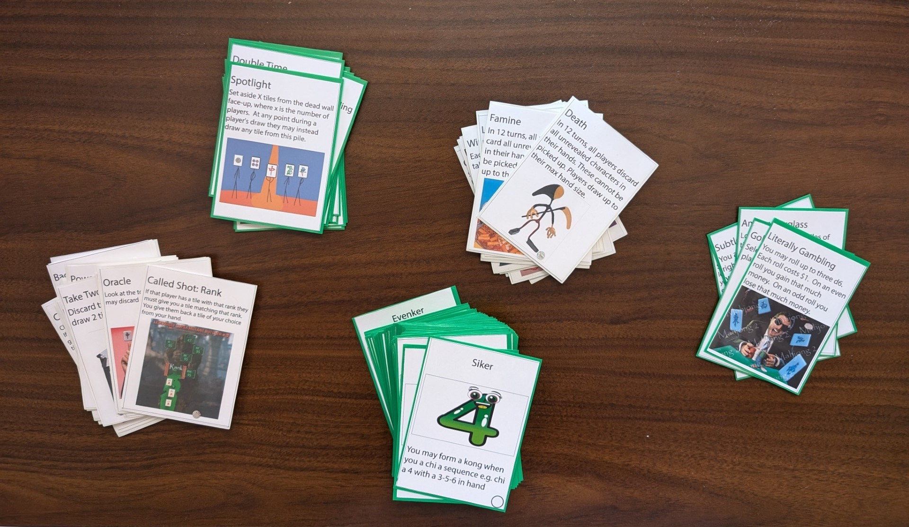
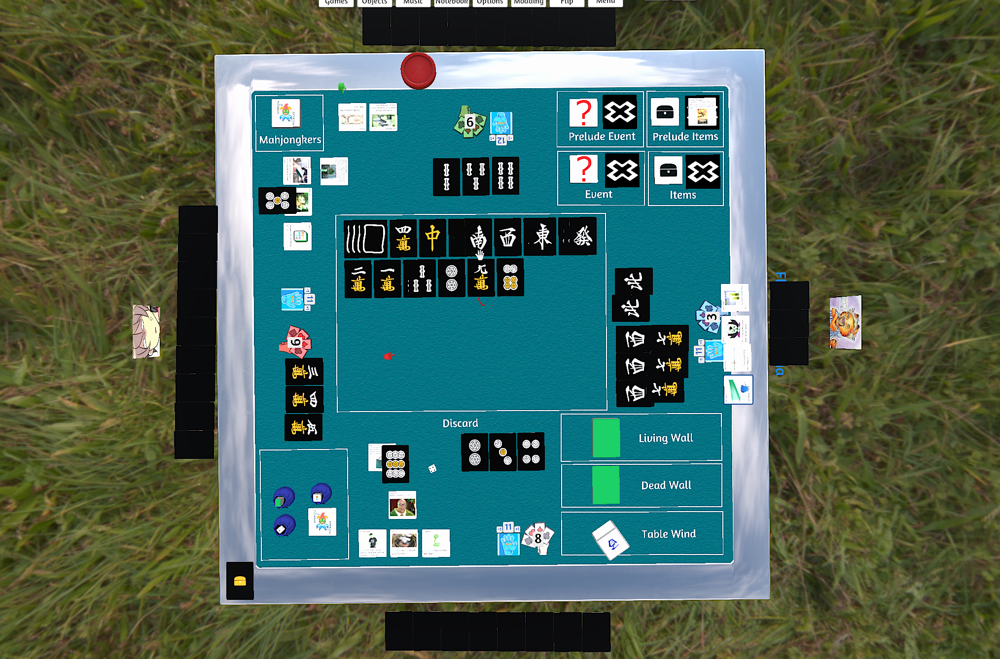
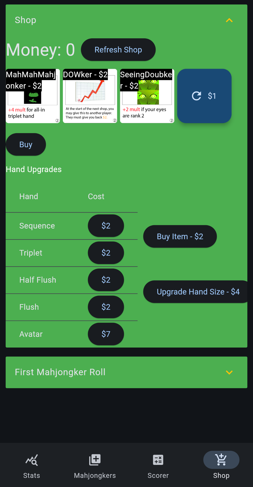
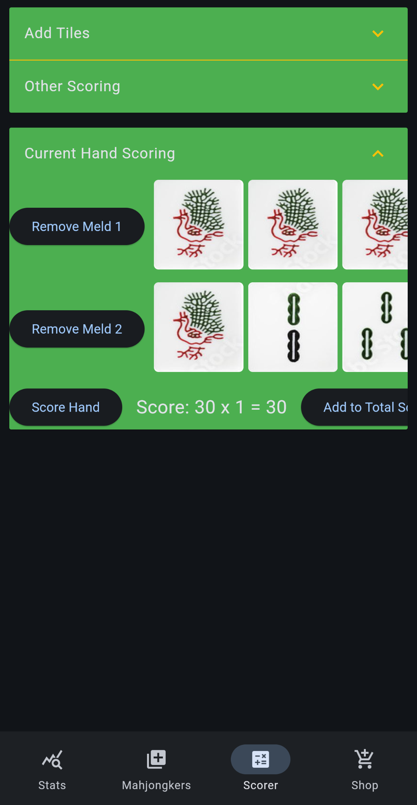
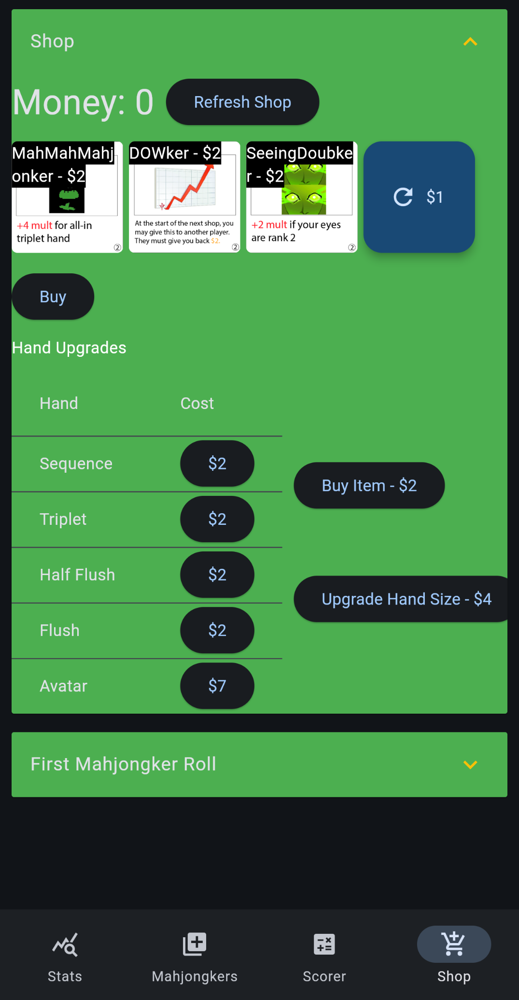
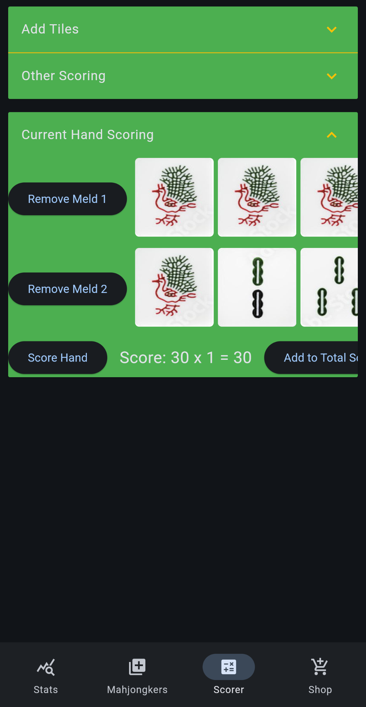

Mahjong 2 is a deck-builder party game based on the classic game of Mahjong. Inspired by the scoring deck-building mechanics of Balatro and the chaos of Mario Party, Mahjong 2 aims to capture the essence of Mahjong while introducing more strategy, player interaction and excitement into the mix.
We are currently iterating on the project with regular playtests. In order to facilitate rapid testing and iteration, we built out the first prototype of the game with the goal of creating an MVP that minimizes friction during playtests. We started by printing out physical materials to play with a real mahjong set.
We also built out a playable version in Tabletop Simulator so that we could continue running tests online with more playtesters.
Lastly, I threw together a web app in Python to handle many of the time-consuming parts of our game like the scoring and shop phases, that can easily be used alongside both physical and TTS versions. You can find it here.
 



Some features of Mahjong 2 include:
- Unique scoring and income generation
- Build out 50+ unique upgrades over the course of several rounds to specialize your playstyle and maximize your score
- Spend your money wisely at shops in between rounds
- Dozens of items and events that both introduce chaos and mitigate randomness
- Adjust the deck to build towards your playstyle, or attack other players